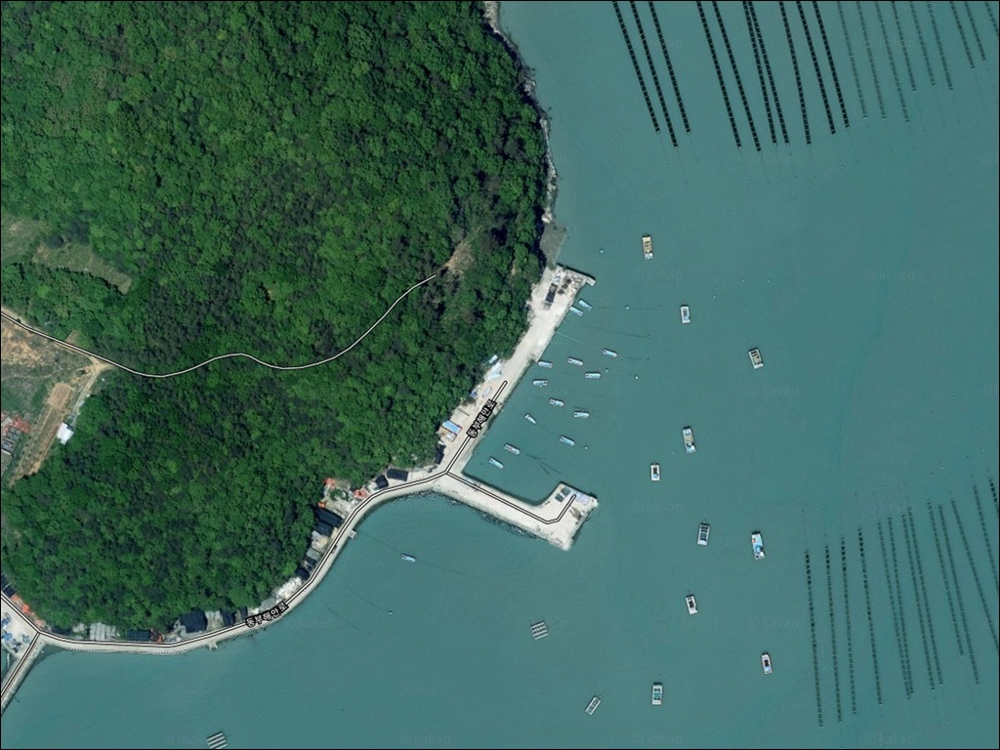
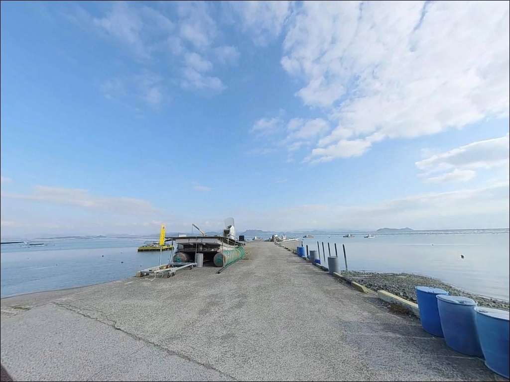
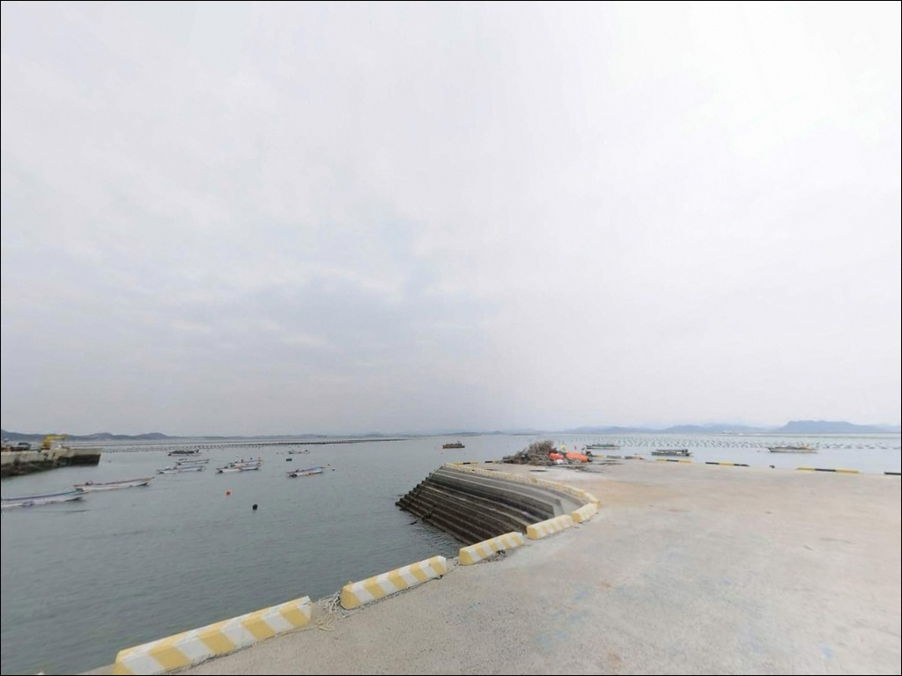
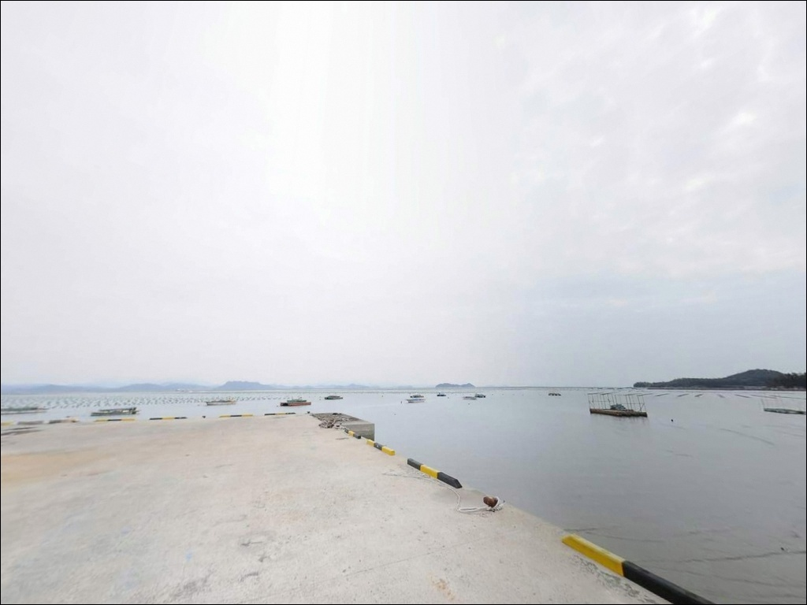
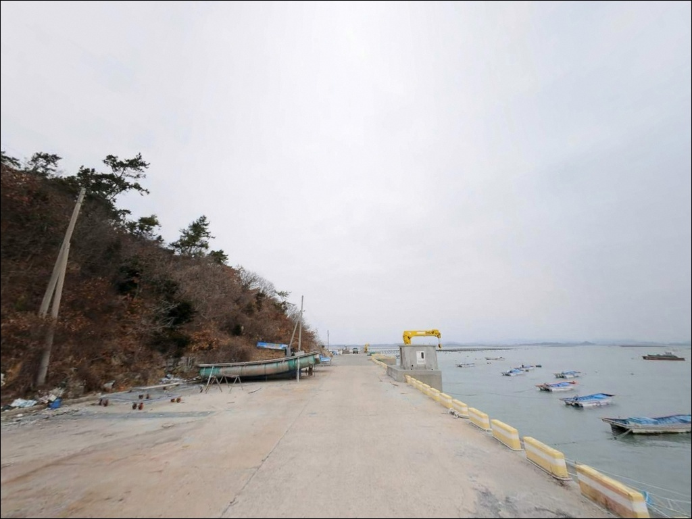
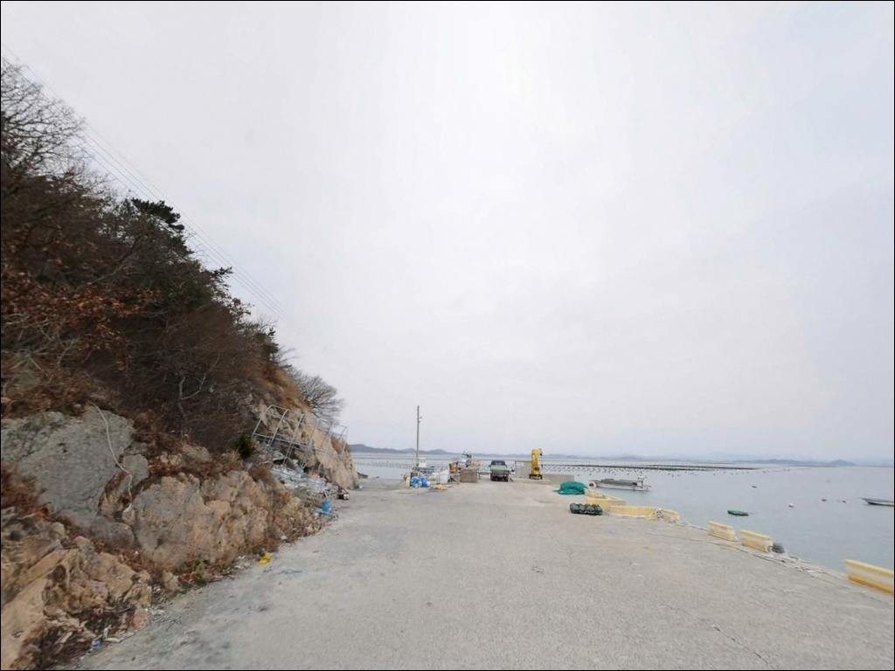
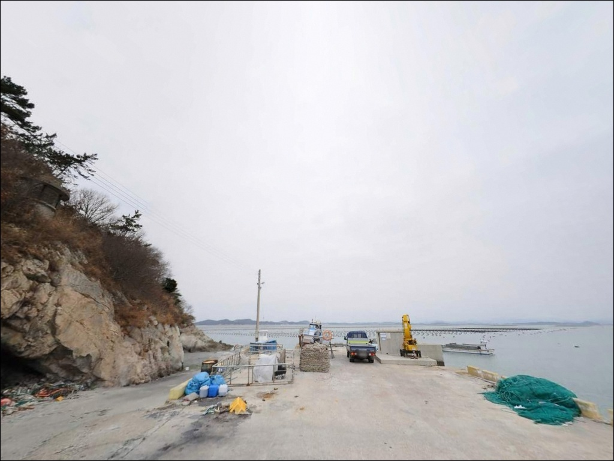
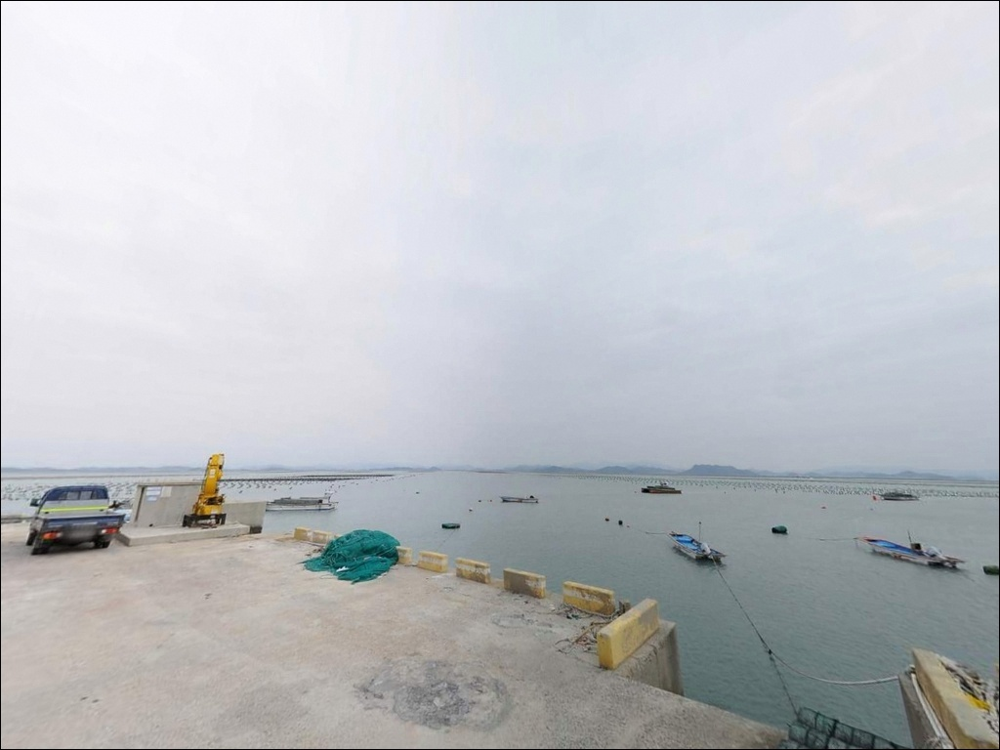
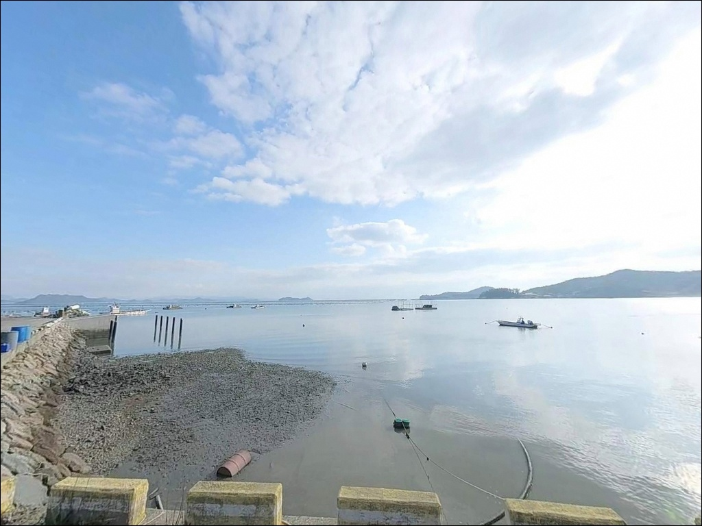

내산리 선착장, 진도 전남 진도군 자연의 여백을 느낄 수 있는 차박, 낚시 명소


포인트 안내
내산리 선착장
전남 진도군 고군면 내산리 14-6
내산리 선착장을 처음 찾는 낚시인이
가장 많이 틀리는 판단은
내만이라서 조류가 약할 것이라는 가정입니다.
진도 해역은 물때에 따라 조류 세기가 크게 달라지며,
타이밍을 놓치면 채비 컨트롤이 어려워지고
낚시 여건 자체가 바뀌는 구조입니다.
전남 진도군 고군면, 해남군 화원반도와 마주보는
동부 내만 해안에 자리한 내산리 선착장은
소규모 마을 선착장과 방파제가 함께 붙은 형태입니다.
얕은 수심과 펄 바닥 구조를 가진 조용한 포인트로,
봄 감성돔 시즌과 맞물려
진도 북부 내만권 낚시인들이 찾는 자리입니다.
이 글은 내산리 선착장의
진입 동선, 차박 여건, 낚시 방식 적합성,
물때 판단 기준에 집중합니다.
조황 단정이나 특정 어종 보장은
이 글의 범위에 포함되지 않습니다.

1. 진입 동선과 포인트 접근성
내산리는 진도 고군면 해안도로와 연결된
소규모 어촌 마을입니다.
일반 승용차는 마을 안길을 통해
선착장 근처까지 진입할 수 있는 구조이나,
어촌 마을 특성상 도로 폭이 좁고
막다른 구간이 포함될 수 있습니다.
SUV나 캠핑카를 포함한 대형 차량이라면
출발 전에 위성지도로 마을 진입로를
미리 확인하고 가는 것이 좋습니다.
회차 공간이 넉넉하지 않은 소형 선착장 구조상,
후진 진출이 어려운 차량은 진입 전 동선을 먼저 파악해야 합니다.
주차는 선착장 접안면 인근 공터나
방파제 입구 주변을 활용하는 방식이 일반적입니다.
소형 마을 선착장 구조상 차량 1~2대 수준이며,
어선 이동 동선을 막지 않는 자리를
먼저 확인하는 것이 기본입니다.

2. 차박 환경과 야간 체류 여건
내산리 선착장은 소규모 어촌 마을에
인접해 있어 차박 독립성이 낮은 편입니다.
민가와의 거리가 가까운 구조상
프라이버시 확보가 제한적이며,
야간에도 마을 동선과 겹치는 경우가 있습니다.
내만 해안이라 외해 파도 노출은 낮고
바람 영향도 상대적으로 완만한 편이어서
낚시 후 조용히 하룻밤 머무는 용도로는
나쁘지 않습니다.
다만 주차 공간이 좁은 편이어서
차박을 메인 목적으로 삼기에는
공간 확보 여부를 현장에서 먼저 판단해야 합니다.
가로등이 선착장 주변에 일부 설치되어 있을 수 있으나,
방파제 끝단이나 외항 쪽은
어두운 구간이 남는 구조입니다.
야간 낚시라면 헤드랜턴과 예비 배터리를
반드시 갖춰야 하며,
민가 인접 지역인 만큼 소음 관리도 기본입니다.


3. 주변 편의시설 및 인프라 현황
내산리 선착장 인근에는
편의점이나 식당 등 즉시 이용 가능한
생활 편의시설을 기대하기 어렵습니다.
소규모 어촌 마을 구조상
완전 자급 체제로 진입하는 것이
현실적인 준비 방식입니다.
고군면 소재지 방향으로 차량 이동 시
기본 생필품 구입이 가능한 곳을
출발 전에 미리 검색해 두는 것이 좋습니다.
식수, 얼음, 낚시 소품, 연료 모두
출발 전에 갖춰야 합니다.
응급 상황 발생 시 진도읍까지
이동 시간이 상당하므로,
비상약품과 충분한 수분 준비는
기본 안전 준비 항목입니다.

4. 진입 전 반드시 챙겨야 할 준비사항
내산리 선착장 방문 전에
가장 먼저 확인할 것은 물때입니다.
진도 해역은 물때에 따라 조류 세기가
크게 달라지는 지역으로,
초들물에서 중날물 사이 타이밍이
이 포인트에서 낚시 여건이 살아나는 구간입니다.
바다타임에서 내산리 기준 물때를 확인하고
출발 시각을 맞추는 것이 기본 전략입니다.
얕은 펄 바닥 구조인 만큼
채비 손실 빈도가 높을 수 있습니다.
여분 채비는 넉넉하게 준비하는 편이 좋으며,
기상청 예보도 당일 아침 한 번 더 확인해
포인트 낭비를 막는 것이 기본입니다.
마을 선착장이라 어선 조업이 이루어지는 공간입니다.
어선 이동 동선과 어구에 접촉하지 않도록
자리를 잡는 것이 기본 매너이며,
야간에는 구명조끼와 헤드랜턴을
반드시 착용해야 합니다.

5. 물때에 따라 낚시 여건이 달라지는 지형 분석
내산리 선착장은 해남 화원반도와 마주보는
진도 동부 내만 해안에 위치합니다.
외해 파도 노출이 낮은 만 구조이나,
진도 해역 특유의 조류 영향은
내만 안쪽에서도 물때에 따라 뚜렷하게 나타납니다.
조류가 흐르는 방향과 타이밍이
이 포인트에서 입질 가능성을 결정하는 핵심입니다.
수심은 내만형 선착장 특성상
얕은 편이며 저질은 펄 바닥이 우세합니다.
방파제 끝단과 외항 방향으로 갈수록
수심이 점차 깊어지는 구조로,
이 구간이 낚시 채비를 운용하기에
유리한 수심 변화 구간입니다.
선착장 주변에는 크고 작은 수중 지형이
발달해 있을 가능성이 있어,
바닥 어종의 은신처 역할을 하는 구간이
방파제 모서리 주변에 형성됩니다.
출조 전에 내산리 방파제 조황을
검색해 보시기 바랍니다.


6. 내산리 선착장에서 어울리는 낚시 스타일
얕은 수심과 펄 바닥 구조를 감안하면
원투낚시가 이 포인트에서
가장 기본적인 공략 방식입니다.
초들물 타이밍에 외항 방향으로 멀리 던진 뒤
붕장어·감성돔을 기다리는 방식이
내만형 선착장 구조와 잘 맞는 편입니다.
릴찌낚시도 이 포인트의 지형 조건에 어울립니다.
조류가 흐르는 방향으로 채비를 흘리면서
방파제 외항 쪽 수심 변화 구간을
탐색하는 방식으로,
봄~초여름 감성돔 시즌에
진도 고군면 내산 앞바다가 조황 루트에 포함되는 점을
감안하면 충분히 시도해볼 가치가 있습니다.
연안 루어낚시도 병행할 수 있습니다.
방파제 발밑과 모서리 주변은
우럭과 노래미 같은 락피시 계열이
서식하기 좋은 지형 조건을 갖추고 있습니다.
소형 지그헤드 채비로
방파제 경계선을 천천히 탐색하는 방식이
어울리며, 저수심 대응 채비가 유리합니다.

7. 대안 포인트와 플랜 B 동선
내산리 선착장 여건이 여의치 않거나
진입 공간이 부족할 때는
장사등골 방파제가 첫 번째 대안입니다.
내산리 기준 북측과 남측에 각각 방파제가
위치하고 있으며,
조류를 받는 구조로 다양한 낚시 스타일에
대응하기 좋은 편입니다.
벌포항 방파제도 플랜 B로 삼기에 적합합니다.
내산리보다 규모가 크고
방파제 구조가 뚜렷해
외항·내항 구분이 명확하며,
진입과 주차 여건이 더 안정적인 편이어서
내산리를 처음 탐색할 때
기점으로 삼기 좋은 포인트입니다.
진도 북부 대표 포인트를 찾는다면
쉬미항 방파제도 선택지입니다.
내산리에서 거리가 있지만
들물 타이밍에 조과 반응이 나오는 포인트로
알려진 곳입니다.
내산리와 묶어서
하루 동선으로 운영하기에 어울립니다.

조용한 내만 선착장에서
물때를 맞추면 내산리가 달라 보입니다
감성돔 릴찌낚시나 원투낚시를 즐기는 낚시인이라면
내산리 선착장의 내만형 지형 조건은
잘 맞는 구조입니다.
온라인 정보가 많지 않은 조용한 포인트인 만큼
직접 발품을 팔아야 하는
탐색형 성격이 강한 자리이기도 합니다.
반면 물때 확인 없이 찾아가거나,
편의시설을 기대하고 방문하면
기대에 못 미치는 상황을
맞닥뜨릴 가능성이 높습니다.
물때 확인, 자급 준비, 진입로 점검,
이 세 가지를 갖추고 간다면
진도 고군면의 조용한 포인트를
제대로 즐길 수 있습니다.
편의시설 없는 내만 어촌 마을에서
조류 흐름 옆에 자리를 깔고 하룻밤 머무는
차박 낚시 여행자라면,
민가 인접 여건과 주차 공간만 미리 확인해두면
낚시와 차박을 조용히 연계하기 좋은
출조가 될 수 있습니다.